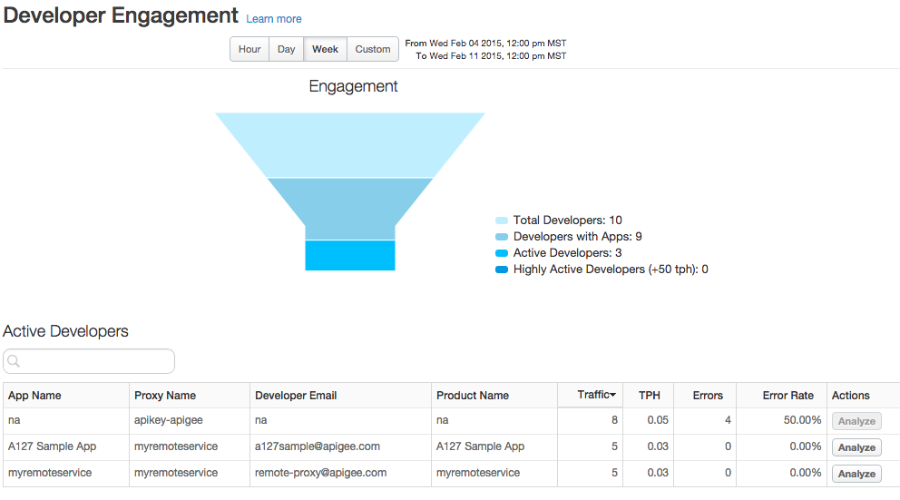
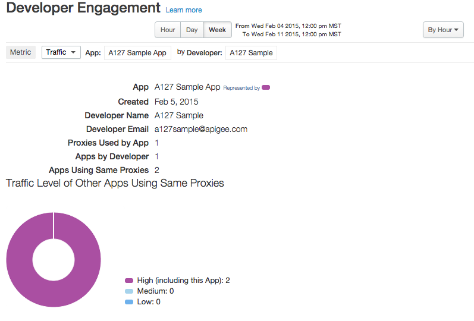

[toc]
The Developer Engagement dashboard tells you which of your registered app developers are generating the most API traffic. For each of your developers, you can find out who is generating the most API traffic and the most errors. For example, if a particular developer's app is generating a lot of errors relative to other developers, you can pro-actively address the problem with that developer.
The Developer Engagement dashboard

| Metric | Description |
| Total Developers | The total number of developers associated with APIs deployed to an organization. |
| Developers with Apps | The total number of developers associated with apps in an organization. |
| Active Developers | The number of developers generating any amount of API traffic. Developers may exist in the organization and have apps, but if their apps aren't making any API calls, they're not active. |
| Highly Active Developers | The number of developers generating API traffic exceeding 50 transactions per hour. |
"Active developers" means the number of developers generating any amount of API traffic. Developers may exist in the organization and have apps, but if their apps aren't making any API calls, they're not active.
| Metric | Description |
| App Name | The name of the app. |
| Proxy Name | The name of the API proxy associated with the app. |
| Developer Email | The email address of the developer who registered the app. |
| Product Name | The product name associated with the app. |
| Traffic | The amount of traffic generated by the app for the selected time period. |
| TPH | The transactions per hour generated by the app for the selected time period. |
| Errors | The total number of errors generated by the app for the selected time period. |
| Error Rate | The error percentage calculated by dividing total errors by total traffic for the selected time period. |
| Actions | Click the Analyze button to see more details about an app. See Analyze developer engagement for details. |
In this view, select the metric you wish to view for the selected app.

| Metric | Description |
| Proxies used by <App Name> | Measures all APIs that have traffic generated by the selected app. |
| Traffic level of other apps using the same proxies | Measures the API traffic flowing through all apps using the same set of APIs as the currently selected app. |
| Other Apps by Developer | Measures other apps generating traffic registered by the same developer as the developer of the selected app. |
| Other Apps using the same Proxies | Measures other apps, from the same developer or not, that use the same set of APIs used by the selected app. |
You can view metrics for all proxies or drill into specific proxies using the Metric dropdown menu at the top of the dashboard.
This dashboard uses standard controls, like the date and data aggregation selectors, hovering over graphs for more context, and so on. To learn more, see http://docs.apigee.com/node/15971.